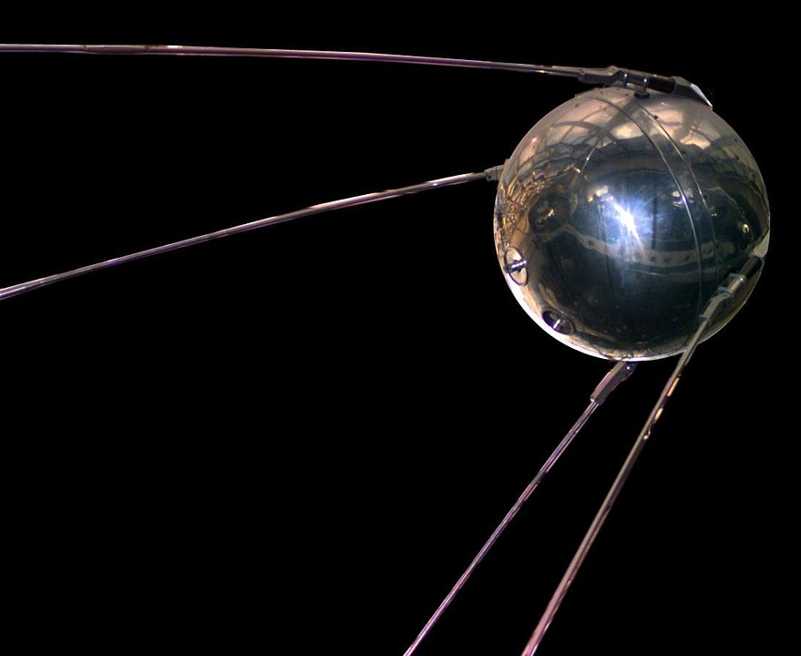
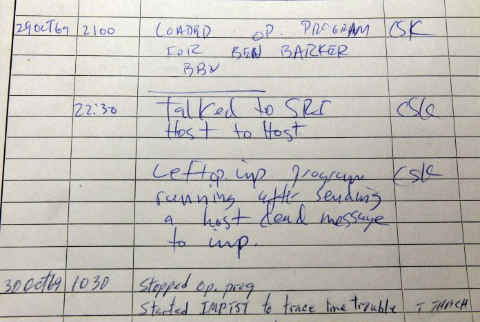
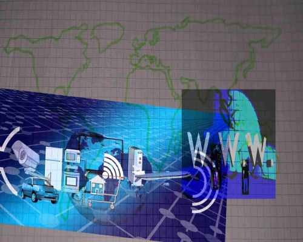

Origem
O lançamento de Sputnik
No dia 4 de outubro de 1957, na União Soviética, foi lançado o primeiro satélite artificial para a órbita da Terra.
Conhecido como Sputnik, não fazia muito, circulava a Terra com o seu transmissor de rádio a fazer bip boops.
Após o lançamento do Sputnik, muitos americanos começaram a pensar mais seriamente sobre ciência e tecnologia.
As escolas acrescentaram cursos sobre temas como química, física e cálculo. As empresas receberam subsídios governamentais e investiram-nos em investigação e desenvolvimento científico.
O próprio governo federal também formou novas agências, tais como a Administração Nacional de Aeronáutica e Espaço (NASA) e a Agência de Projectos de Investigação Avançada do Departamento de Defesa (ARPA), para desenvolver tecnologias tais como foguetes, armas e computadores.
A Origem da ARPAnet
Cientistas e peritos militares estavam especialmente preocupados com o que poderia acontecer no caso de um ataque soviético ao sistema telefónico do país. Apenas um míssil, temiam, poderia destruir toda a rede de linhas e fios que tornava possível uma comunicação eficiente a longa distância.
Em 1962, um cientista do M.I.T. e da ARPA chamado J.C.R. Licklider propôs uma solução para este problema: uma "rede galáctica" de computadores que pudessem falar uns com os outros. Tal rede permitiria aos líderes governamentais comunicar mesmo que os soviéticos destruíssem o sistema telefónico.
Em 1965, outro cientista da M.I.T. desenvolveu uma forma de enviar informação de um computador para outro que ele chamou de "comutação de pacotes". A comutação de pacotes decompõe os dados em blocos, ou pacotes, antes de os enviar para o seu destino. Desta forma, cada pacote pode seguir a sua própria rota de lugar para lugar. Sem a comutação de pacotes, a rede de computadores do governo (agora conhecida como ARPAnet) teria sido tão vulnerável a ataques inimigos como o sistema telefónico.

A primeira mensagem enviada
A 29 de Outubro de 1969, ARPAnet entregou a sua primeira mensagem: uma comunicação "node-to-node" de um computador para outro. (O primeiro computador estava localizado num laboratório de investigação na UCLA e o segundo em Stanford; cada um tinha o tamanho de uma pequena casa). A mensagem "LOGIN" era curta e simples, mas de qualquer modo, crashou a rede ARPA, e o computador de Stanford só conseguiu receber as duas primeiras letras da mensagem "LO".
O crescimento da rede
No final de 1969, apenas quatro computadores estavam ligados à ARPAnet, mas a rede cresceu de forma constante durante os anos 70.
Em 1971, foi adicionada a ALOHAnet da Universidade do Havai, e dois anos mais tarde foram adicionadas as redes do Colégio Universitário de Londres e do Estabelecimento Real do Radar na Noruega. No entanto, à medida que as redes de computadores comutados por pacotes se multiplicaram, tornou-se mais difícil para eles integrarem-se numa única "Internet" mundial.
No final da década de 1970, um cientista informático chamado Vinton Cerf tinha começado a resolver este problema desenvolvendo uma forma de todos os computadores em todas as mini redes do mundo comunicarem uns com os outros. Ele chamou à sua invenção "Protocolo de Controlo de Transmissão", ou TCP. (Mais tarde, acrescentou um protocolo adicional, conhecido como "Protocolo Internet". O acrónimo que utilizamos para nos referirmos a estes hoje em dia é TCP/IP). Um escritor descreve o protocolo de Vinton Cerf como "o 'handshake' que introduz computadores distantes e diferentes uns aos outros num espaço virtual".

A "World Wide Web"
O protocolo de Vinton Cerf transformou a Internet numa rede mundial. Ao longo da década de 1980, investigadores e cientistas começaram a usá-la para enviar ficheiros e dados de uns computadores para os outros. No entanto, em 1991, a Internet mudou novamente. Nesse ano, um programador informático na Suíça chamado Tim Berners-Lee apresentou a World Wide Web: uma Internet que não era simplesmente uma forma de enviar ficheiros de um lugar para outro, mas era ela própria uma "teia" (dai o nome "World Wide Web") de informação que qualquer pessoa na Internet podia ver. A Berners-Lee criou a Internet que conhecemos hoje.
Desde então, a Internet mudou em muitos aspectos. Em 1992, um grupo de estudantes e investigadores da Universidade de Illinois desenvolveu um navegador sofisticado a que chamaram Mosaic. (Mais tarde tornou-se no Netscape.) O Mosaic oferecia uma forma amigável de pesquisar na Web, permitiu pela primeira vez que os utilizadores vissem palavras e imagens na mesma página, navegar usando "scrollbars" e "links" clicáveis.
Nesse mesmo ano, o Congresso decidiu que a Web podia ser utilizada para fins comerciais. Como resultado, empresas de todos os tipos apressaram-se a criar os seus próprios websites, e os empresários do comércio electrónico começaram a utilizar a Internet para vender mercadorias directamente aos clientes. Mais recentemente, sites de redes sociais como o Facebook tornaram-se uma forma popular de pessoas de todas as idades se manterem ligadas.